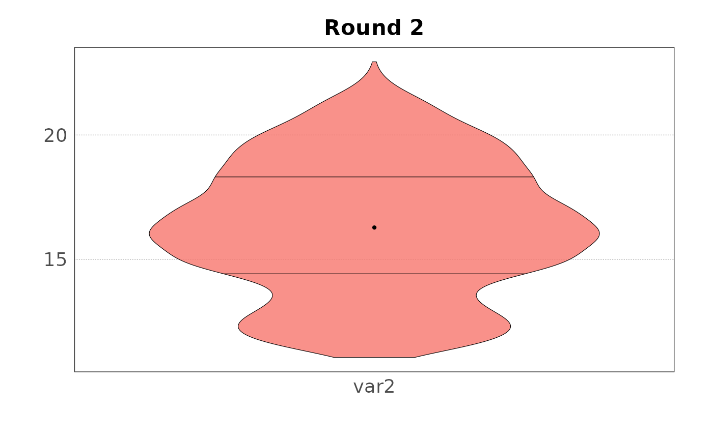

library(elicitr)
#> Error in get(paste0(generic, ".", class), envir = get_method_env()) :
#> object 'type_sum.accel' not foundDatasets
There are two datasets that can be used for practising and
demonstrating. These datasets contains simulated data for two rounds of
elicitation of continuous variables. The first dataset is called
?round_1 and the second ?round_2. Both
datasets contain the same variables, but the values are less disperse in
the second round.
round_1
#> # A tibble: 6 × 9
#> name var1_best var2_min var2_max var2_best var3_min var3_max var3_best
#> <chr> <int> <int> <int> <int> <dbl> <dbl> <dbl>
#> 1 Derek Macle… 1 20 24 22 0.43 0.83 0.73
#> 2 Christopher… 0 7 10 9 0.67 0.87 0.77
#> 3 Mar'Quasa B… 0 10 15 12 0.65 0.95 0.85
#> 4 Mastoora al… -7 4 12 9 0.44 0.84 0.64
#> 5 Eriberto Mu… -5 13 18 16 0.38 0.88 0.68
#> 6 Paul Bol 3 20 26 25 0.35 0.85 0.65
#> # ℹ 1 more variable: var3_conf <int>
round_2
#> # A tibble: 6 × 9
#> name var1_best var2_min var2_max var2_best var3_min var3_max var3_best
#> <chr> <int> <int> <int> <int> <dbl> <dbl> <dbl>
#> 1 Mar'Quasa B… -2 15 21 18 0.62 0.82 0.72
#> 2 Mastoora al… -4 11 15 12 0.52 0.82 0.72
#> 3 Eriberto Mu… 1 15 20 17 0.58 0.78 0.68
#> 4 Derek Macle… 0 11 18 15 0.52 0.82 0.72
#> 5 Christopher… -2 14 18 15 0.55 0.85 0.75
#> 6 Paul Bol 1 18 23 20 0.66 0.86 0.76
#> # ℹ 1 more variable: var3_conf <int>The first column in the dataset stores the name of the expert (randomly generated for demonstration only). The second column contains estimates of a variable collected with a one point elicitation, where only the best estimate is provided. Columns 3 to 5 contain estimates of another variable collected with a three points elicitation, where minimum, maximum, and best values are provided. Finally, columns 6 to 9 contain estimates of another variable collected with a four points elicitation, for which minimum, maximum, best, and confidence are given.
Load data
Any analysis of continuous variables starts by creating the
?elic_cont object with the function
cont_start(). This object stores the matadata of the
elicitation process that are then used to validate the data belonging to
each elicitation round. To build this elic_cont object,
four parameters must be specified:
-
var_names: the name of the variables estimated during the elicitation process -
var_types: the type of the variable for each of these variables (many options are available, ranging from real numbers to probabilities) -
elic_typesthe type of elicitation for each of these variables (three options are available: one, three, and four points elicitation) -
expertsthe number of experts that participated to the elicitation -
titleused to bind a name to the elicitation process
my_elicitation <- cont_start(var_names = c("var1", "var2", "var3"),
var_types = "ZNp",
elic_types = "134",
experts = 6,
title = "Continuous elicitation example")
#> ✔ <elic_cont> object for "Continuous elicitation example" correctly initialised
my_elicitation
#>
#> ── Continuous elicitation example ──
#>
#> • Variables: "var1", "var2", and "var3"
#> • Variable types: "Z", "N", and "p"
#> • Elicitation types: "1p", "3p", and "4p"
#> • Number of experts: 6
#> • Number of rounds: 0Variable and elicitation types must be provided as string containing short codes. For example, the first variable is expected to be an integer (Z), the second a positive integer (N), and the third a probability (p). Similarly, the first variable has been collected with a one point elicitation process (1), the second with a three points elicitation elicitation process (3), and the third a four points elicitation process (4).
Once the elic_cont object has been created, data
belonging to each round can be added with the
cont_add_data() function. Data can be added from different
sources, like a data frame, a CSV or xlsx file, or a Google Sheets file.
The function will check that the data is consistent with the metadata of
the elic_cont object. Here we add the data available in the
package:
my_elicitation <- cont_add_data(my_elicitation,
data_source = round_1,
round = 1) |>
cont_add_data(data_source = round_2,
round = 2)
#> ✔ Data added to "Round 1" from "data.frame"
#> ✔ Data added to "Round 2" from "data.frame"
my_elicitation
#>
#> ── Continuous elicitation example ──
#>
#> • Variables: "var1", "var2", and "var3"
#> • Variable types: "Z", "N", and "p"
#> • Elicitation types: "1p", "3p", and "4p"
#> • Number of experts: 6
#> • Number of rounds: 2Notice that the commands can be piped together. As explained above,
the metadata are used to validate the data added to the
elic_cont object. If the data is not consistent with the
metadata, an error message will be displayed. For example, if we try to
add a data frame with a different number of columns:
cont_add_data(my_elicitation,
data_source = round_1[, 1:5],
round = 1)
#> Error in `cont_add_data()`:
#> ! Unexpected number of columns:
#> ✖ The imported dataset has 5 columns but 9 are expected.
#> ℹ See Data format in `elicitr::cont_add_data()`.Or if we try to add data where the variable has an incorrect type:
malformed_data <- round_1
malformed_data[, 2] <- malformed_data[, 2] * 0.1
cont_add_data(my_elicitation,
data_source = malformed_data,
round = 1)
#> Error in `cont_add_data()`:
#> ! Invalid data type:
#> ✖ Variable "var1" contains some non integer numbers.
#> ℹ Check raw data.In this case the first variable is expected to have integer values
(var_type = Z), but the data contains real numbers.
Get data
Data can be retrieved from the elic_cont object with the
cont_get_data() function:
cont_get_data(my_elicitation, round = 1)
#> # A tibble: 6 × 9
#> id var1_best var2_min var2_max var2_best var3_min var3_max var3_best
#> <chr> <int> <int> <int> <int> <dbl> <dbl> <dbl>
#> 1 5ac97e0 1 20 24 22 0.43 0.83 0.73
#> 2 e51202e 0 7 10 9 0.67 0.87 0.77
#> 3 e78cbf4 0 10 15 12 0.65 0.95 0.85
#> 4 9fafbee -7 4 12 9 0.44 0.84 0.64
#> 5 3cc9c29 -5 13 18 16 0.38 0.88 0.68
#> 6 3d32ab9 3 20 26 25 0.35 0.85 0.65
#> # ℹ 1 more variable: var3_conf <int>Notice that the name of the expert has been anonymised and assigned
to the column id. If you add the data from a file, the name
of the experts will never reach the elic_cont object. Data
can be retrieved only for given variables or for given variable or
elicitation types. For example, to get data for the first variable
only:
cont_get_data(my_elicitation, round = 1, var = "var1")
#> # A tibble: 6 × 2
#> id var1_best
#> <chr> <int>
#> 1 5ac97e0 1
#> 2 e51202e 0
#> 3 e78cbf4 0
#> 4 9fafbee -7
#> 5 3cc9c29 -5
#> 6 3d32ab9 3Data analysis
Plot raw data
Now that the data has been loaded in R, it can be analysed. First let’s plot the data for the first round and the first variable:
plot(my_elicitation, round = 1, var = "var1")When the variable has been collected with a three or four points elicitation process, the plot shows the error of the estimates:
plot(my_elicitation, round = 1, var = "var2")And when the variable has been collected with a four points elicitation process, the estimates are rescaled to the [0, 1] interval:
plot(my_elicitation, round = 2, var = "var3")
#> ✔ Rescaled min and maxFinally, the group mean can be added to the plot:
plot(my_elicitation, round = 2, var = "var3", group = TRUE)
#> ✔ Rescaled min and maxSample data
Data can be sampled using the function cont_sample()
(see the variable documentation for the explanation of the sampling
methods). Here we sample 1000 values for each variable:
samp <- cont_sample_data(my_elicitation, round = 2)
#> ✔ Rescaled min and max for variable "var3".
#> ✔ Data for "var1", "var2", and "var3" sampled successfully using the "basic" method.
samp
#> # A tibble: 18,000 × 3
#> id var value
#> <chr> <chr> <dbl>
#> 1 5ac97e0 var1 1
#> 2 5ac97e0 var1 -4
#> 3 5ac97e0 var1 1
#> 4 5ac97e0 var1 1
#> 5 5ac97e0 var1 -4
#> 6 5ac97e0 var1 1
#> 7 5ac97e0 var1 0
#> 8 5ac97e0 var1 1
#> 9 5ac97e0 var1 1
#> 10 5ac97e0 var1 1
#> # ℹ 17,990 more rowsSampled data can be summarised:
summary(samp)
#> # A tibble: 3 × 7
#> Var Min Q1 Median Mean Q3 Max
#> <chr> <dbl> <dbl> <dbl> <dbl> <dbl> <dbl>
#> 1 var1 -4 -2 0 -0.960 1 1
#> 2 var2 11.0 14.4 16.3 16.3 18.3 22.9
#> 3 var3 0.507 0.672 0.718 0.716 0.763 0.876Plotted as violin plots:
plot(samp, var = "var2", type = "violin")Or plotted as density plots:
plot(samp, var = "var3", type = "density")The same plots can be generated for the group (aggregated data):
plot(samp, var = "var2", type = "violin", group = TRUE)
plot(samp, var = "var3", type = "density", group = TRUE)